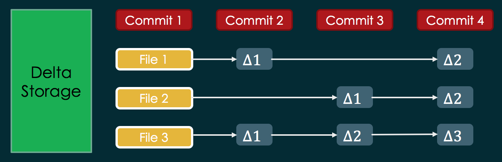
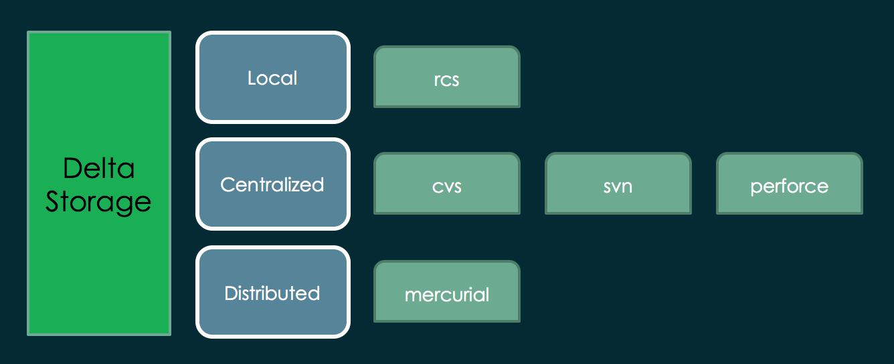
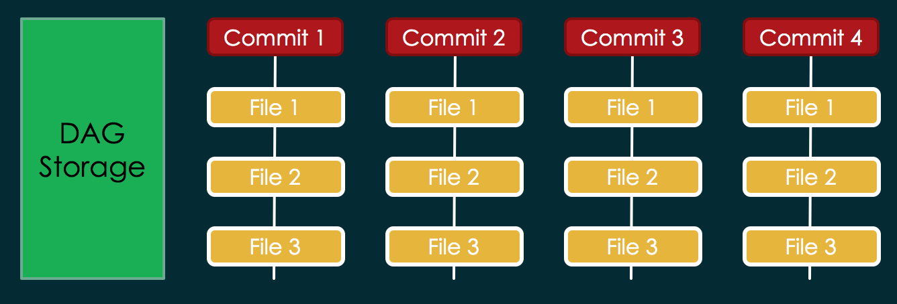
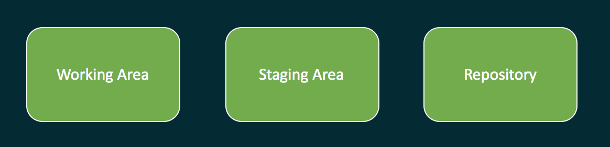
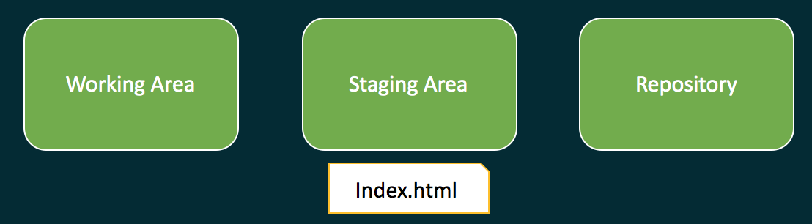
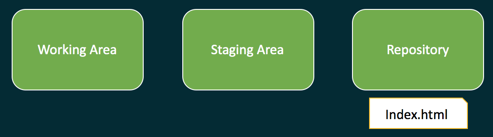

Git Essentials

firat atagun
What is Version control system?
A software desinged to tracked changes to set of files over the time. VCS provides ability to revert back to previous states or version.Back in the days; files/folders were copied and pasted. Then folders were renamed to indicate the version of the project. ie: skynet1, skynet2 etc. That was the way to version control projects. But that was hard to manage, search, find changes and maintain.
Distribution Model
Local, Centralized, Distributed.History
RCS -> CVS -> SVN -> GitStorage
When talking about version control system we can identity two kinds of storage namely delta storage and DAG (directed acyclic graph).
Delta Storage
Delta Storage Apps
DAG Storage
 Git uses snapshot. Every commit is a snapshot of all the files in a repository.DAG Storage Apps

What is Git?
Git is a distributed version control system.In fact, git is a content addressable file system and a persistent map with a version control system developed on top it. It has been designed to work with or without a centralized server.
While CVS and SVN designed to track files, git was designed to track content.
While CVS and SVN designed to track files, git was designed to track content.
Goals
Fully distributed
Support non-linear development
Handle large projects efficiently.
Atomicity Every operation is atomic.
Performance: It is very fast.
Security: Uses checksum and hashing for authenticity.
Installation
Download
Follow instructions
Configuration
Once setup is complete you can start configuring git.
Setting up user name and email
# git config --global user.name username
# git config --global user.email mailaddressIf --global option is left out configuration only applies to the specific repository.
Setting alias for Commands
# git config --global alias.aliasname commandname
For example:
# git config --global alias.st status
To view all the configuration options:
# git config --list
GUI Clients
There are several GUI clients. Some of are:
- SourceTree
- Github Desktop
- Git Kraken
- Smart git
Getting Started
Initialize a repository
# git init
Add file(s) to it
# git add file.name
Commit
# git commit -m "your commit message"
Check Status
# git status
or short status
# git status -s
Break down
There are 3 areas in Git namely working area, staging area and repository.
Working Area <-> Staging Area <-> Repository
Files basically move right and left between the areas.

# git init
Creates a repository of the working area. You will see ".git" folder in your working area. That is your local repository. There are bunch of folders and files in .git folder go manage your source code.

# git add index.html
Adds the file to staging area. You can browse and watch what is happening when you add some files to staging area.

# git commit -m "my commit message"
Commits the file to the repository. Likewise, once commit is done, you can browse the .git folder to see what is the side effect of committing and how it is done.
Commits create hashes which are references to the snapshot of the repository at that point of time.
Foundations of Git
Commits
Snapshots
References
Hashing ?
Before files are stored in the database, git checksums the file. These checksums are used to refer to the version references.
Git uses one way hashing algorithm (SHA1).
Hash of an object always produces same outputs. Same data always generates same output. ie: SHA1("hello world") is universally same. Git tracks content by hashing and checksum.
Hash of an object always produces same outputs. Same data always generates same output. ie: SHA1("hello world") is universally same. Git tracks content by hashing and checksum.
Hash index.html
# git hash-object index.html
copy and paste index.html to index2.html
# git hash-object index2.html
Git outputs the same hash based on content.
Git Object Model
Git repository is an object store that holds four kinds of objects: blobs, trees, commits, and tags
Everything in Git repository if Object. Objects never change once created, they are immutable.
An object has has the following properties.
- A type (Blob, Tree, Commit or Tag)
- Size
- Content
Object are represented with SHA1 hashes (40 digit long string) of their content.
- Very low chance of collision
- Usually 6 or 7 character is enough for reference
To see the type of the object:
# git cat-file -t 7f2535f
commit
To see it in pretty form:
# git cat-file -p 7f2535f
tree 872303aa715a9a935a3c89194ce9e755af74e85e
parent 0d71744d00698cc991f1f5e8f06d8caa38b091f3
author firat 1530946207 +0300
committer firat 1530946207 +0300
images
Using the same approach object model can be traversed.
➜ gitessentials git:(master) ✗ git cat-file -p 872303
100644 blob e7b4f216ae95408f210f5b463f4afa1a7fbfde72 .gitignore
100644 blob 8b137891791fe96927ad78e64b0aad7bded08bdc README.md
040000 tree 3d9b616821d797659f7ecb334ef30e68f3c889a8 css
100644 blob 505bb18829e66b94cb430b135823a2a37f448454 demo.html
040000 tree 97c67f49e0ef0e66cc58a8db4aa7954f6ac3b26b images
100644 blob f0782a34aad1a96d502715a9283151e266694789 index.html
040000 tree cefdab4fcf32c15d3239c92dcbdf0032949ea8b9 js
040000 tree da9b393e765c481c8b19f85922bd849cbc120c6b lib
040000 tree bced3065ee3360cf38e6a1c7641a9d7df1f48fca plugin
040000 tree f2a6f41d44e52015ed79e317314f21e68a0fb6c5 test
100644 blob d554a3707e36d2848e8a4dc7c1eed65b3639bfac vcs_history.PNG
Finally you can see the content of a blob.
# git cat-file -p f0782a
Anatomy of a Tree
| Tree | Hash | Name |
|---|---|---|
| Blob | ju23li | Index.html |
| Tree | 32re32 | images |
| Tree | we3m33 | css |
Anatomy of a Commit
| Tree | Hash |
|---|---|
| Tree | cc8ee2 |
| Parent | mkil23 |
| Author | Firat |
| Committer | Firat |
| Commit message |
References
Lightweight movable pointers used by branches, tags, HEAD. References are in .git/refs folder
Renaming a file
Only a file in staging area can be renamed by Git. If the file is not tracked by repository, you need to renaming with OS capabilities.
# git mv inde.html index.html
# git commit -m "renaming"
Contents of a commit
To see contents of a commit:
# git show 4f62eae1b
If you like to see the parents of a commit you can use ^ (caret sign). If you like see the parent of a parent commit use two of them ^^.
# git show 4f62eae1b^
# git show 4f62eae1b^^
You can also possible to use numbers.
# git show 4f62eae1b^2
Git log
# git log
# git log --oneline
# git log --graph
# git log --decorate
# git log --branches --tags
# git log --oneline --graph --decorate --branches --tags
# git config --global alias.lol "log --oneline --graph --decorate --branches --tags"
# git log master..feature
Git diff
Can be used to view the differences between commits. External programs can be bind to view it in a more visual way.
# git diff HEAD HEAD^
# git diff HEAD HEAD^^
# git diff 3e2b 28dd
# git diff master develop
Cherry Picking
It is possible to cherry pick specific commits from different branches.
# git cherry-pick 4f62eae1
Cherry picks a commit from another branch.
-x writes to commit log that the specified commit has been cherry picked.

Reference log aka Reflog
Git keeps reference record of all the commits internally in your repository at any time. However, these references can be purged or garbage collected. They are also only local. Use with caution.
# git reflog
# git checkout 74c11e0
# git cherry-pick 74c11e0
Checking out commits
Any commit/snapshot can be checkout any given time. However, similar to Reflog, commit can be viewed in detached mode.
# git checkout 74c11e0
# git checkout HEAD^^
Going back to where you left off
Getting out of detached mode or HEAD can be done as following similar to how linux handles history -1.
# git checkout -
Stash
Stash is another area where files can be stored for a while.
Stash can be though of stack. It works with push and pop methods.
By default only tracked files can be stored in stash. Objects should be indexed first to be stashed.
Stash my current state
# vim index.html
# git add index.html
# git stash
index.html is now stashed. Additionally, current commit is checked out.
List of stashes can be seen.
# git stash list
# git stash list
Recovering from stash
# git stash pop
# git stash apply
Delete a stash
# git stash drop
Delete all stashes
# git stash clear
Tags
Tags are like branches, however, tags do not move. Tags directly points to a commit.
There are two types of tags. One of them is normal the other is annotated which can store metadata such as email, username etc.
Display tags
# git tag
-n will show annotations
Create tag
# git tag version.1.0.1
Create tag with comment
# git tag -a version.1.0.1
Delete a tag
# git tag -d version.1.0.1
Checkout a tag
# git checkout version.1.0.1
Checkout a tag and create a branch
# git checkout version.1.0.1 -b NewBranch